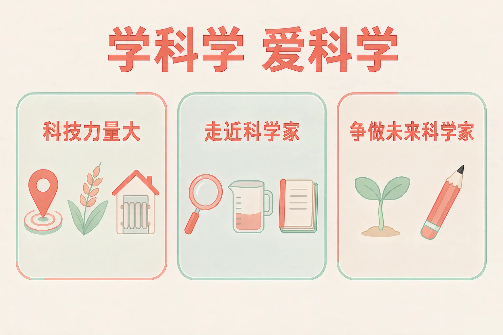
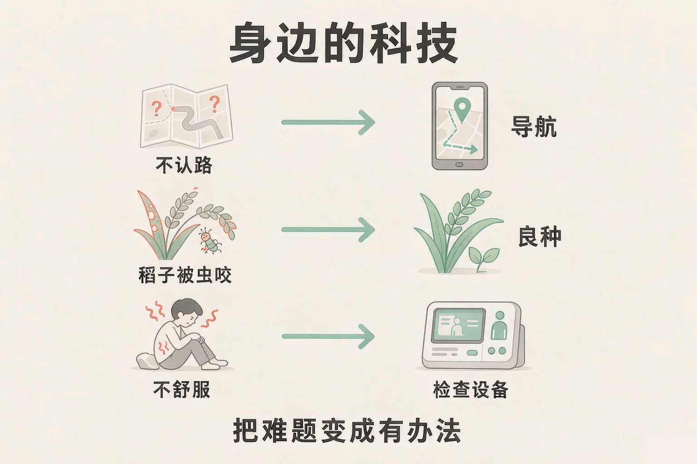
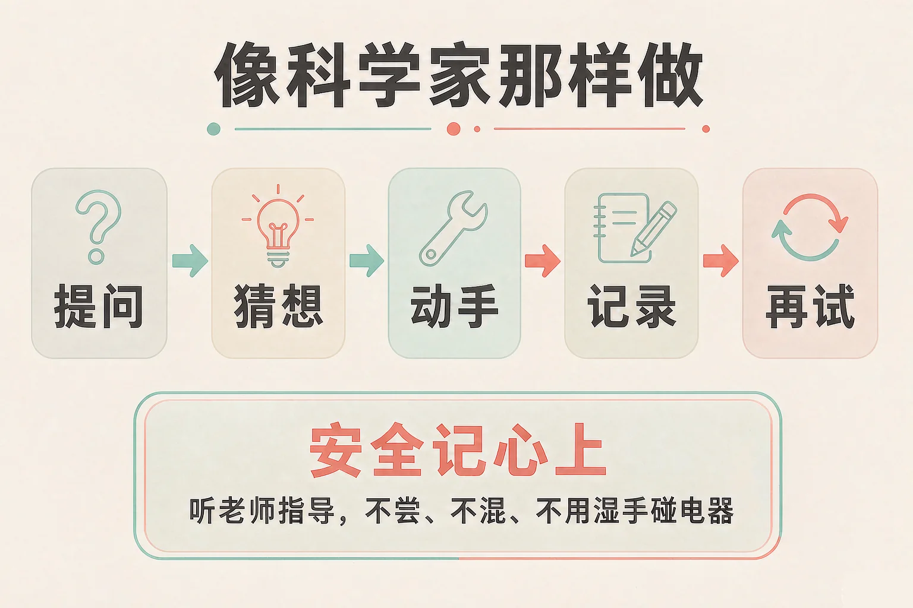

Gallery
v1.0.0 · skill v7.22.0
小学三年级 · 中华优秀传统文化
身边的科技帮我们解决了哪些难题？科学家做事，又和我们有什么不一样？

选一个你真正想知道的问题，后面的活动都会围着它转。
选择或输入后，这节课会围绕你的问题展开。
先凭直觉选一个，选完立刻看到解释——错了也没关系，正好知道要重点听哪里。
1. 出门去一个不熟悉的地方，下面哪种办法能帮我们找到路？
导航借助卫星定位，能告诉我们大概往哪边走、还有多远。错因提醒：常见错误是误认为「科技离我们很远」——其实它就在每天的生活里，帮我们解决很具体的小麻烦。
2. 科学家做事时，下面哪个做法是他们共同的做法？
认真观察、如实记录、不怕失败，是科学家共同的做法。错因提醒：有的同学误认为「科学家靠的是特别聪明」——比起聪明，他们更靠一次次认真的观察和尝试。
3. 做实验的时候，同伴说「这个东西闻着像糖水，想尝一口」，你会：
实验用的东西不管看起来多像吃的，都不能尝，这是最基本的安全要求。错因提醒：容易把「看起来像吃的」误认为「真的可以吃」——做实验时，安全永远排在第一位。
为什么要学这一课？
我们都用过手机、坐过高铁、见过田里的农机，觉得这些很平常（And）；可是这些平常的事，背后是很多人遇到难题、一次次想办法才做成的（But）；所以要真正走近科学，先得看见这件事：科技就是把难题一步一步变成办法（Therefore）。
科技不只在实验室里，它就在我们每天的生活里。它们做的是同一件事：把难题变成有办法。
回家路上
不认路，有卫星导航；下雨前，有天气预报提醒我们带好雨具；出门远一点，有又快又稳的列车。
家里和医院
屋冷有保温材料和取暖设备；身体不舒服，检查设备能帮医生看得更清楚；想远方亲人，打开手机就能看见。

🔍 深层理解 换个角度再看一遍这件事，看看能不能说出背后的原理。
看见它：导航、良种、检查设备、保温材料、视频通话……它们看着互不相干，其实做的都是同一件事：替人解决一个具体的难题。
解释它：为什么说科技是「一步一步」想办法？因为没有人一开始就知道答案。先弄清难题在哪里，再试着做，不行就改一改再试。
迁移它：这个思路在家里也用得上：衣服总找不到，就想个固定的地方放；书包总是忘带东西，就写一张清单——这也是在解决自己的难题。
上面是六个生活里真实遇到的难题，下面是六种解决问题的办法。先点一个难题，再点你觉得能解决它的那种办法。
连好的难题与办法
先在上面点一个难题。
科学家做的事各不相同，做法却很相像。这些做法，我们三年级也能学。

有的同学误认为「科学家一定特别聪明，一猜就中」。其实他们更靠的是一次次认真的观察和尝试：猜错了就照实记下来，改一改再试一次。研究杂交水稻的科学家，就是在上千次失败里一点点试出来的。
最要紧的一件事：安全记心上
做观察和小实验要听老师的指导，按步骤来；实验用的东西不管看起来多像吃的，都不能尝；不自己把几种东西混在一起；不用湿手碰插座和电器。
🔍 深层理解 换个角度再看一遍这件事，看看能不能说出背后的原理。
看见它：「如实记录」听起来很平常，却是科学里最要紧的一条：结果和自己想的不一样，也照实写下来，别人才敢照着你的记录再做一次。
比较它：同样是没成功：一种是照实写下「这次没有成功」再找原因，一种是悄悄改成成功——两种做法，长出来的本领完全不同。
迁移它：这套做法不止在实验里：学一样新本领、想弄清一件好奇的事，都是先问、再看、再试、再如实记下来。
先点一件做观察或小实验时可能遇到的事，再从三个做法里选一个。选得好会告诉你为什么，选得不太合适也会告诉你还可以试试什么。
先点一件可能遇到的事。
情境：小雨想弄清一件事：绿豆发芽需要水吗？没有水它会不会发芽？请你帮她把这个观察一步一步做下来。
有的同学误认为「记录要和自己猜的一样才算做对了」。其实记录只要和看到的一样就是对的；正是那些「不一样」的地方，往往藏着一个新的发现。
说给同桌听：小雨这五步里，哪一步最不容易做到？如果是你，那一条「不一样」的记录，你会怎么写？
先凭直觉选一个，选完立刻看到解释——错了也没关系，正好知道要重点听哪里。
1. 下面哪句话说得对？
导航、良种、检查设备、保温材料，解决的都是一件件很具体的难题。错因提醒：常见错误是误认为「科技只是大人和机器的世界」——其实它每天都在帮我们解决小麻烦。
2. 做观察记录时，你看到的结果和自己的猜想不一样，下面哪个做法更好？
照实记录才是真的观察，别人照着你的记录也能再做一次。错因提醒：有人误认为「记录要好看、要符合猜想」——其实记录只要和看到的一样，就是对的。
3. 同伴做实验时说：「这个东西闻着像糖水，我尝一口行吗？」下面哪个做法最合适？
实验用的东西不管看起来多像吃的，都不能尝，这是最基本的安全要求。错因提醒：容易把「看起来像吃的」和「真的能吃」搞混——做实验时，安全永远排在第一位。
先点一条做法，再点它应该进的筐：像科学家那样做的放一边，要调整的放另一边。
先在上面点一条做法。
分完之后，想一想：
「像科学家那样做的」这一边里，你最想先练哪一条？写在下面，再说一说为什么选它。
先凭直觉选一个，选完立刻看到解释——错了也没关系，正好知道要重点听哪里。
1. 观察记录做了五天，第三天忘记记了，下面哪个做法更好？
照实写下来就是诚实，少了一天不丢人，把后面的记好更重要。错因提醒：常见错误是误认为「补一条差不多就行」——凭印象补的不是真观察，别人照着也做不出来。
2. 同学说：「网上都这么讲，那肯定是真的。」下面哪个做法更好？
先弄清楚说法从哪里来，再看有没有别的说法，才不容易被带偏。错因提醒：容易把「很多人都说」当成「一定是真的」——人多，不等于有依据。
3. 做小实验时，老师提醒要用到小刀，下面哪个做法最合适？
听清要求、按步骤做、刀刃朝外，都是最基本的安全做法。错因提醒：有人误认为「我会用就不用听」——实验里的安全做法，是为了保护你和身边的同学。
一句口诀：多问一句为什么，认真看、动手试，照实记下来，安全记心上。
给别人讲一遍：请用「提问、记录、再试一次」这三个说法，说清楚你打算做的一次小观察。
再动一动手：写一写你最想问的一个「为什么」，再说说你打算怎么去找答案。
三层练习，做完第一、二层就算通关；第三层留给愿意继续探索的同学。
⭐ 基础巩固（必做）
⭐⭐ 能力应用（必做）
⭐⭐⭐ 迁移挑战（选做）
左边是学它之前要先会的，右边是学会之后可以继续探索的，下面是同一领域的伙伴知识。
图谱正在加载：首次进入需下载知识索引（约 1–3 秒），加载完成后本行会自动消失。